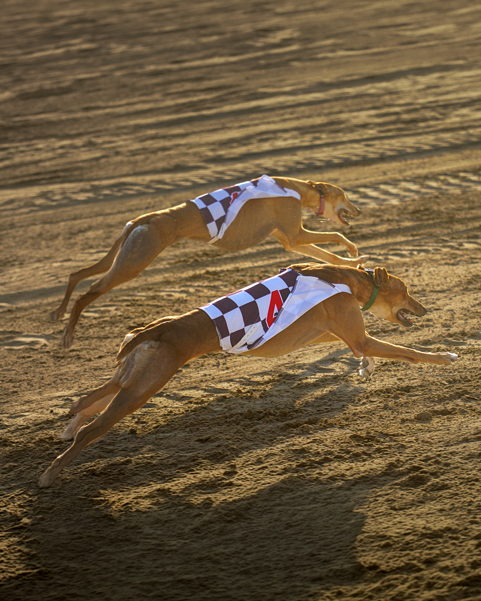
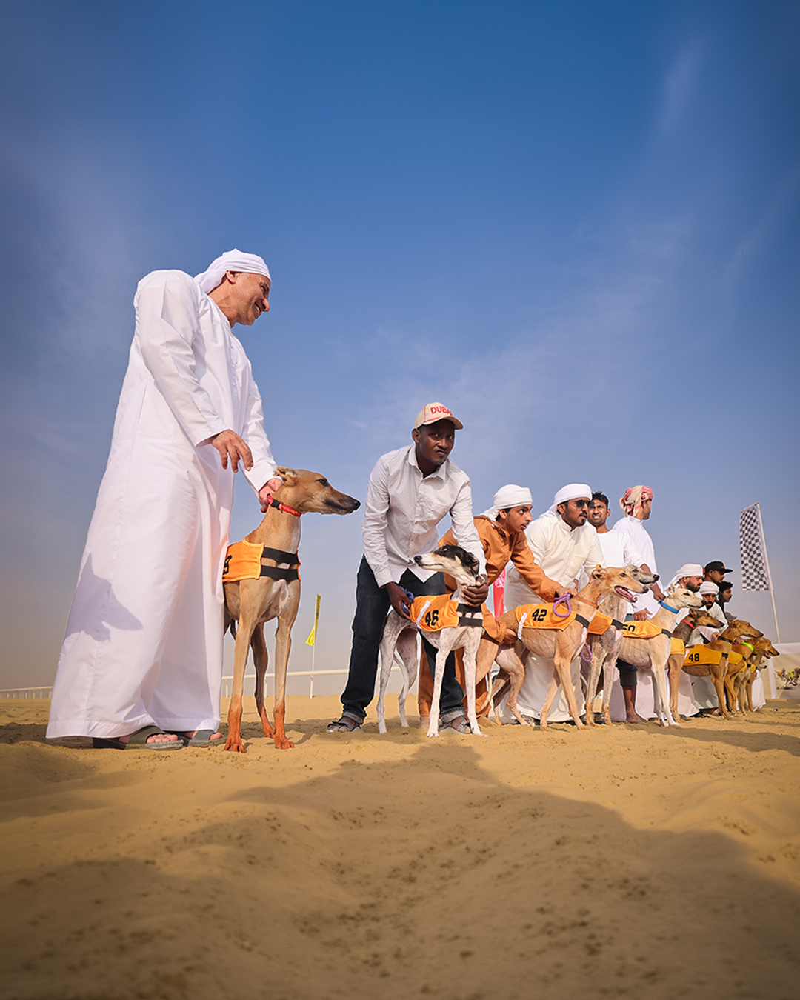

موسم أول يجمع العين والظفرة، بأربع مسافات من ألف إلى 2500 متر، ويُختتم في 20 مارس 2027.
تستعد مدينة العين لاستضافة أولى جولات النسخة الأولى من بطولة السلوقي العربي يوم 7 نوفمبر 2026، على أن تبدأ منافسات الظفرة في 14 نوفمبر، ضمن موسم رياضي يمتد إلى مارس 2027 وينظمه نادي صقاري الإمارات ومركز السلوقي العربي بأبوظبي.
وتفتتح التصفيات على مسافة ألف متر في ميدان الروضة لسباقات الهجن بالعين. وتضم أجندة الموسم عشر محطات تنافسية موزعة على أربع مسافات: ألف متر للسرعة، و1500 متر للمسافة المتوسطة، وألفي متر للتحمّل، و2500 متر للقدرة، بحسب البيان الذي أصدره النادي في 5 نوفمبر.
من تصفيات نوفمبر إلى ختام مارس
في فئة الألف متر، تُقام الجولة التأهيلية الأولى بالعين في 7 نوفمبر، والثانية في الظفرة في 14 نوفمبر، ثم النهائي في ميدان سباقات الهجن بالظفرة يوم 28 نوفمبر 2026.
وتنتقل المنافسات إلى مسافة 1500 متر في ديسمبر: تصفيات العين في 5 ديسمبر، وتصفيات الظفرة في 12 ديسمبر، والنهائي في الظفرة يوم 26 ديسمبر 2026.
أما مسافة ألفي متر فتبدأ تصفياتها في العين يوم 9 يناير 2027، وتليها الظفرة في 16 يناير، قبل إقامة النهائي في العين يوم 6 فبراير. ويُختتم الموسم بسباق القدرة لمسافة 2500 متر في الظفرة يوم 20 مارس 2027.

منافسات تحفظ صلة الرياضة بالموروث
تُقام البطولة في الظفرة برعاية الشيخ حمدان بن زايد آل نهيان، ممثل الحاكم في منطقة الظفرة ورئيس نادي صقاري الإمارات، وفي العين برعاية الشيخ هزاع بن زايد آل نهيان، ممثل الحاكم في منطقة العين. وتستهدف دعم الملاك والمربين، وصون السلالات العربية الأصيلة، وتشجيع الأجيال الجديدة على المشاركة ضمن نظام للسباقات والتسجيل والتصنيف.
ويشمل برنامج الفعاليات المصاحبة مسابقة جمال السلوقي العربي «المزاين» ومسابقة محاكاة الصيد باستخدام الطعم الميكانيكي. وقد بدأت هذه الفعاليات خلال النسخة الأخيرة من معرض أبوظبي الدولي للصيد والفروسية، لتجمع بين إبراز الجمال والمهارات الفطرية للسلوقي.

رؤية للتدريب والبحث وتوسيع المشاركة
وقال ماجد علي المنصوري، الأمين العام لنادي صقاري الإمارات، إن أهداف البطولة تتجاوز تنظيم السباقات إلى تطوير التربية والتدريب والتقييم ودعم البحث. وتشمل الرؤية بناء قاعدة بيانات علمية متخصصة لدراسة القدرات الجينية والبدنية للسلوقي العربي، وتطوير برامج تسهم في المحافظة على السلالات الأصيلة.
كما يسعى المنظمون إلى توسيع قاعدة الملاك والمربين والهواة، وتنشيط الأنشطة المرتبطة بالتربية والتدريب والمعدات والسياحة التراثية.
وأتاح المنظمون نموذجًا لتسجيل الإعلاميين والمصورين وصنّاع المحتوى الراغبين في تغطية البطولة عبر موقعها الرسمي.
الموقع الرسمي لبطولة السلوقي العربي · تسجيل الإعلاميين والمصورين لتغطية البطولة
مصدر الصور الأرشيفية: نادي صقاري الإمارات.